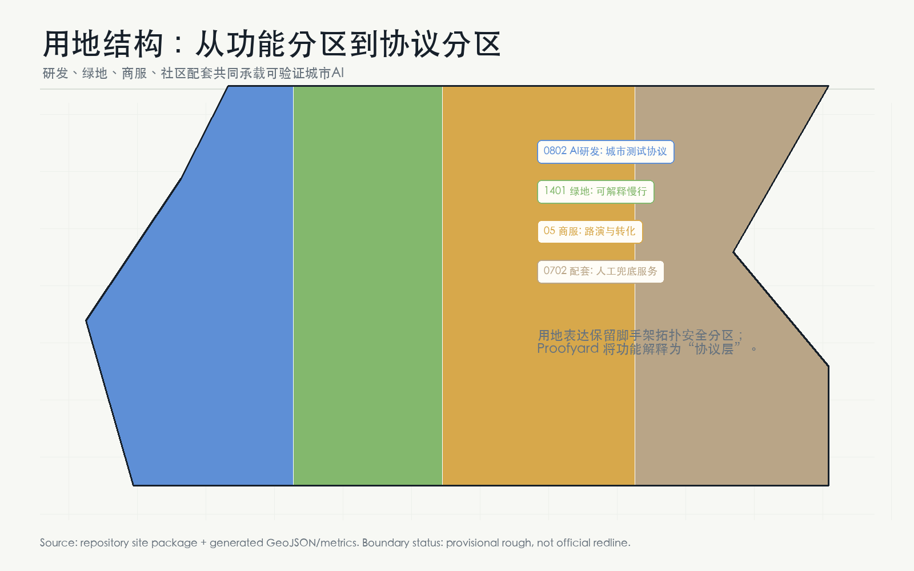
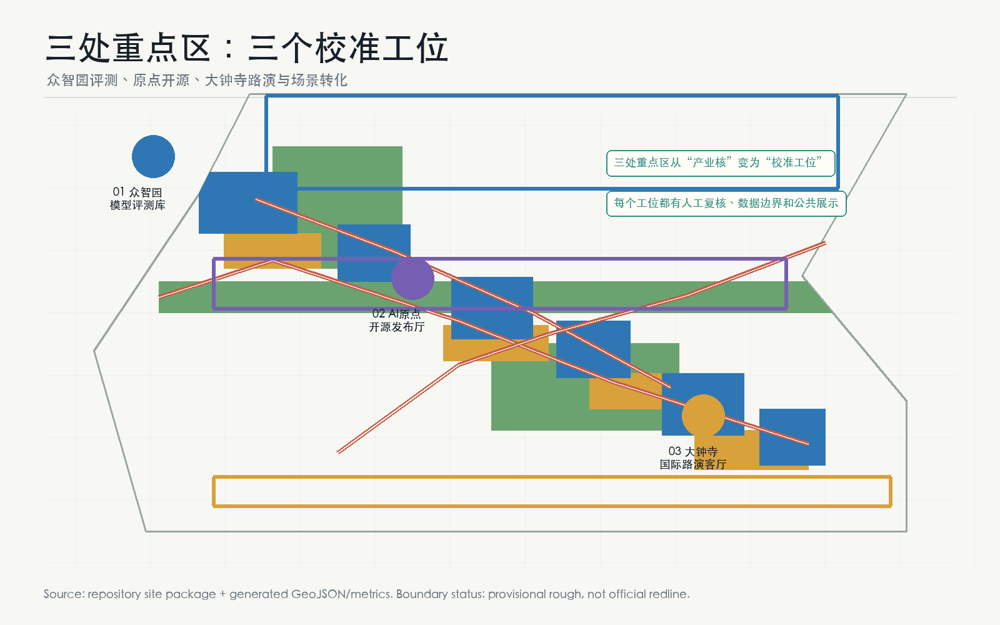
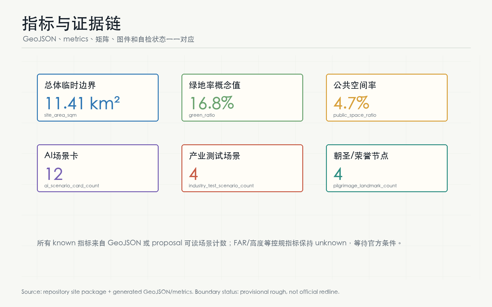

site boundary 与三处 key areas 均来自仓库临时边界，不是 official redline、审批依据或精确面积结论。官方 polygon 发布后需整体重算。
五张核心图





核心指标
四类公共协议
众智园负责模型红队、标准工坊和安全治理展示。
原点社区负责开源发布、数据契约和知识产权服务。
公共庭院展示场景边界、版本记录、争议和复盘结果。
医疗、法律、政务、安全和居民服务保留非数字化替代路径。
场景卡
| 编号 | 场景 | 空间 | 边界 |
|---|---|---|---|
| S1-S4 | 模型红队、端侧算力、具身智能、医疗导航 | 众智园、小月河、社区节点 | 产业测试须准入、脱敏、人工复核 |
| S5-S8 | 开源发布、数据契约、慢行导览、智能体消费 | 原点社区、京张步道、大钟寺 | 自愿授权、可撤回、不可跨场景画像 |
| S9-S12 | IP门诊、设施维护、全球活动周、贡献荣誉墙 | 科技服务翼、公共庭院、一带路线 | 专家/街道复核，活动安全人工确认 |
总览地图
见五张核心图中的 Proofyard overview。
三层范围
统筹研究、总体设计、重点区域分别对应战略校准、空间校准、场景校准。
重点区域
众智园模型评测库、AI原点开源发布厅、大钟寺国际路演客厅。
用地分区
研发、绿地、商服、社区配套共同承载协议层。
交通慢行
主步行校准线、场景复核联络线、东西两翼审计服务线。
蓝绿公共空间
京张遗址公园校准步道、清河低碳复核廊、小月河场景复盘廊。
建筑
六个概念原型建筑只表达功能与运营关系，不表达批准规模。
更新项目
近期、中期、长期项目均为概念建议，依赖 official boundary 与专业审查。
AI 场景
12 张场景卡，其中 4 个产业测试验证场景。
自检状态
本页由本地 GeoJSON、metrics 和 proposal 派生；提交前运行 self_check_submission.py。
来源
OFFICIAL-ANNOUNCEMENT, SITE-PACKAGE, AGENT-TASKBOOK, SOURCE-REGISTRY, BOUNDARY-SOURCE, KEY-AREA-SOURCE。
假设
A-BOUNDARY-001, A-PROOFYARD-001, A-CONTROLS-001, A-DATA-GOV-001。
提交证据链
GeoJSON 是空间权威层，metrics 是复算层，compliance/standard/depth 矩阵是任务覆盖层，proposal 是人类可读层，图件、PDF 和本 HTML 是解释层。任何层级与官方资料冲突时，待 official boundary 和正式附件补齐后重算。